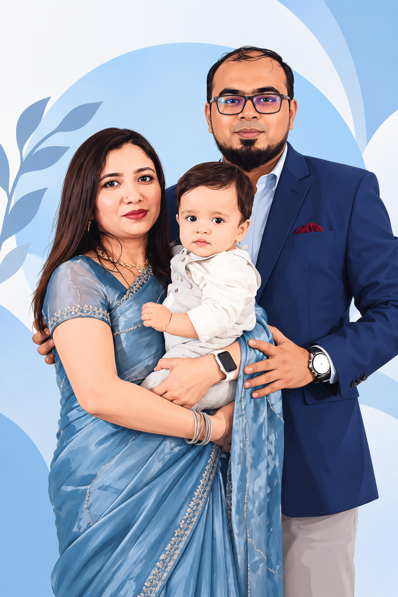

Long Drives
I enjoy getting away from the routine and spending relaxed time on the road with family.
BEYOND WORK
Behind every professional goal is a personal reason to keep growing. I am a loving husband and a proud father of a charming boy. My family is my greatest source of motivation, happiness and perspective.

FAMILY FIRST
I value the simple things that become lasting memories: family time, travel, long drives, good food and being present for the people I love.
My family keeps me grounded through every busy release, difficult decision and ambitious goal. They remind me that success is not only about what I deliver at work, but also about the person I am at home.
“At the end of the day, the most important projects in my life are the moments I spend with my family.”
LIFE OUTSIDE WORK
I enjoy getting away from the routine and spending relaxed time on the road with family.
New places, different cultures and family trips give me fresh perspective and memorable experiences.
Cricket has always been one of the sports I enjoy and a good reminder of teamwork and patience.
Quiet weekends, meals together and everyday moments are often the most meaningful ones.